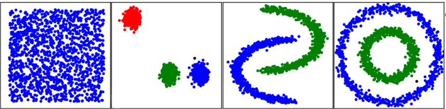
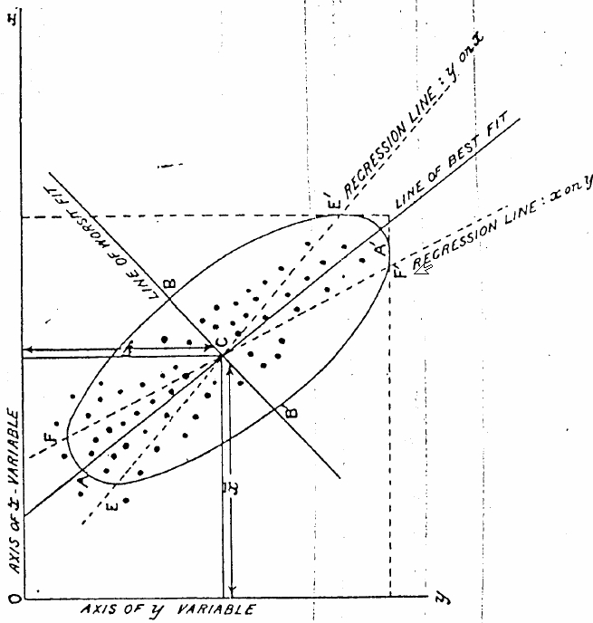
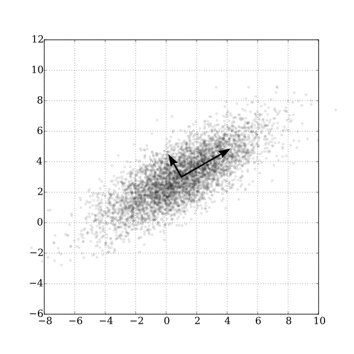
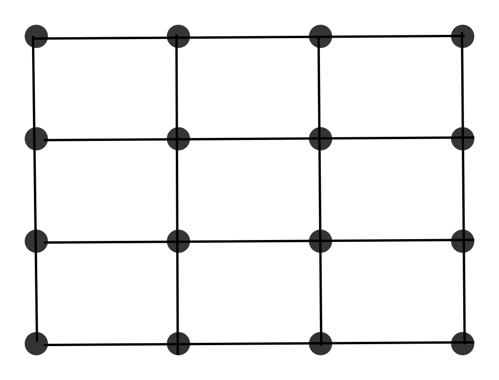

Introduction to ML Master, Paris Est MLV
@comeetie
Unsupervised learning Clustering and dimensionality Reduction Master, Paris Est-MLV
@comeetie
Clustering, Find homogeneous groups
Dimensionality reduction Find interesting subspace to project the data
Unsupervised learning
Clustering
K-means
Hierarchical clustering(CAH)
DB-Scan
Dimensionality reduction
Clustering ?
Find "homogeneous" groups
$$\{\mathbf{x}_1,...,\mathbf{x}_N\}, \mathbf{x_i} \in \mathcal{R}^p$$
Clustering ?
Find "homogeneous" groups

Toy examples
How to measure the homogeneity ?
mean distance to a center, variance :
$$\sum_{i=1}^{N}||\mathbf{x}_i-\mu||^2$$
homogeneous groups, small variance around cluster centers
$$\sum_{i=1}^N\sum_{k=1}^{K}z_{ik}||\mathbf{x}_i-\mu_k||^2$$
with : $\forall i\in \{1,...N\},\, z_{ik}\in\{0,1\}^K,\,\sum_{k=1}^{K}z_{ik}=1$
K-means
intra-cluster variance minimization :
$$z_1,...,z_N\,and\,\mathbf{\mu_1},...,\mathbf{\mu_K}=\arg\min\sum_{i=1}^N\sum_{k=1}^{K}z_{ik}||\mathbf{x}_i-\mu_k||^2$$
avec : $\forall i\in \{1,...N\},\, z_{ik}\in\{0,1\}^K,\,\sum_{k=1}^{K}z_{ik}=1$
Problem :
Computationaly hard, non convex -> multiples "local minima"
K-means
intra-cluster variance minimization :
$$\arg_{z_1,...,z_N}\min_{\mathbf{\mu_1},...,\mathbf{\mu_K}}\sum_{i=1}^N\sum_{k=1}^{K}z_{ik}||\mathbf{x}_i-\mu_k||^2$$
Solution :
Alternating opitmisation
When $z_1,...z_N$ are fixed, it's easy to find the $\mu_1,...,\mu_k$ they are simple mean
When the $\mu_1,...,\mu_K$ are fixed, it's easy to optimize with respect to $z_1,...,z_N$ simply find the closet center for each data-point
Iterative algorithm that converge towards a local minima
! initialisation see k-means++
K-means
intra-cluster variance minimization :
$$\arg_{z_1,...,z_N}\min_{\mathbf{\mu_1},...,\mathbf{\mu_K}}\sum_{i=1}^N\sum_{k=1}^{K}z_{ik}||\mathbf{x}_i-\mu_k||^2$$
Remarks :
We must specify $K$
We implicit assume that cluster looks like ball around "K" centers
We implicitly assume that the groups have similar sizes
! beyond k-means mixture of gaussian and the EM algorithm
K-means
with scikit-lean
kmeans = KMeans(init='k-means++', n_clusters=n_digits, n_init=10)
kmeans.fit(digits.data)
kmeans.cluster_centers_
kmeans.labels_
How to measure homogeneity (2)
Homogeneous groups = groups of similar points
2 points are similar if they are closes
2 groups of points $(C_1,C_2)$ are similar if ?
The maximum distance between two members of the groups is small:
$$ max_{i \in C_1,j\in C_2}||x_i-x_j||^2$$
Maximal link
How to measure homogeneity (2)
Homogeneous groups = groups of similar points
2 points are similar if they are closes
2 groups of points $(C_1,C_2)$ are similar if ?
The minimum distance between two members of the groups is small:
$$ min_{i \in C_1,j\in C_2}||x_i-x_j||^2$$
Minimal link
How to measure homogeneity (2)
Homogeneous groups = groups of similar points
2 points are similar if they are closes
2 groups of points $(C_1,C_2)$ are similar if ?
The average distance between two members of the groups is small:
$$ \frac{1}{N_{C_1}N_{C_2}}\sum_{i \in C_1}\sum_{j\in C_2}||x_i-x_j||^2$$
Average link
How to measure homogeneity (2)
Homogeneous groups = groups of similar points
2 points are similar if they are closes
2 groups of points $(C_1,C_2)$ are similar if ?
The wheighted distance between their centers is small:
$$ \frac{N_{C_1}N_{C_2}}{N_{C_1}+N_{C_2}}||\mu_{C_1}-\mu_{C_2}||^2$$
Ward
HC algorithm
Put each data point into a cluster
merge the two closest clusters (with respect to the link function)
until you end up with a unique clsuer with all data-points inside
Build the binary tree that store the merge moves and their costs (dendogram)
(optional) Cut the tree at a certain level to obtain a flat clustering
HC
Greedy optimisation of merge
Remarks :
No need to fix $K$ a priori but use the dendogram to fix it
Choice of the distance between cluster is important and has a clear impact on the results
No strong hypothesis on the groups shapes
HC
with scikit-lean
cah = AgglomerativeClustering(linkage="ward",n_clusters=10)
cah.fit_predict(digits.data)
cah.labels_
DB-Scan
How to measure homogeneity (3)
homogeneous = in the same high density area
Density ~ number of data-point per surface area
How to measure homogeneity (3)
homogeneous = in the same high density area
Density ~ number of data-point per surface area
local measure of the density $\xi(\mathbf{x},\epsilon) = \sum_{i=1}^{N}1_{\{||\mathbf{x}-\mathbf{x}_i\||^2<\epsilon\}}$
How to measure homogeneity (3)
DBSCAN
parameters :$\epsilon, minpts$
nbcluster = 0
For each $\mathbf{x_i}$ :
If $\mathbf{x_i}$ was already visited continue;
Else :
If $\xi(\mathbf{x}_i,\epsilon)>minpts$
nbcluster++
expand($\mathbf{x}_i$,nbcluster)
Else put $\mathbf{x}_i$ in the noise cluster : $c_i=0$
DBSCAN
expand($\mathbf{x}_i$,nbcluster)
$c_i=nbcluster$
$Neighbours = \{\mathbf{x}_j :\, ||\mathbf{x}_j-\mathbf{x}_i||^2<\epsilon\}$
For each $\{\mathbf{x}_j\, \in\, Neigbours\}$
If $\mathbf{x}_j$ was not visited
Flag $\mathbf{x_j}$ as visited
If $\xi(\mathbf{x}_j,\epsilon)>minpts$
$$Neirghbors = Neighbours \cup \{\mathbf{x}_l :\, ||\mathbf{x}_l-\mathbf{x}_j||^2<\epsilon\}$$
If $\mathbf{x}_j$ do not belong to any cluster $c_j=nbcluster$
DBSCAN
Remarks
Based on local density (no hypothesis on cluster shapes)
2 parameters
Extract a noise cluster
Quite speed
DB-scan
with scikit-lean
db = DBSCAN(eps=25,min_samples=40)
db.fit_predict(digits.data)
db.labels_
Clustering, general remarks :
!! Warning when features have ≠ units !!
! preprocessing : centering - reduction
$$\tilde{\mathbf{x}}=(\mathbf{x}-\bar{\mathbf{x}}).\mathbf{S}^{-1}$$
substraction of the mean (centering : mean =0),
divide by the standard deviation (reduction : variance=1)
normalisation $[0,1]$ substract the min divide by the range.
!! size effect & collinearity !!
divide by the size "feature" , ex : population
Dimensionality reduction
PCA
Dimensionality reduction
Visualisation, exploration, spped up calculus,...
Keep the maximum of information
Linear Projection (ACP,ICA) / non-linéaire (SOM, isomap, ...)
PCA

Pearson, K., On Lines and Planes of Closest Fit to Systems of Points in Space , Philosophical Magazine, vol. 2, no 6, 1901, p. 559–572. (pdf)
PCA
projected variance maimization
PCA
reconstruction error minimisation
PCA
reconstruction error minimisation
+ orthogonales composants.
PCA
projected variance maximisation
$$\hat{\mathbf{w}}=\arg\max_{\mathbf{w}}\frac{1}{N}\frac{\mathbf{w}^{t}\mathbf{X}^{t}\mathbf{X}\mathbf{w}}{\mathbf{w}^{t}\mathbf{w}},\,avec\,||\mathbf{w}||=1$$
PCA
Projected variance maximisation
Eigenvector $(\mathbf{A}.\mathbf{v}=\lambda.\mathbf{v})$ dominant (with the biggest eigenvalue)
of empirical variance-covariance matrice :
$$\Sigma=\frac{1}{N}\mathbf{X}^{t}\mathbf{X}$$
PCA
Projected variance maximisation
Eigenvector $(\mathbf{A}.\mathbf{v}=\lambda.\mathbf{v})$ dominant (with the biggest eigenvalue)
of empirical variance-covariance matrice :
$$\Sigma\mathbf{w}=\lambda_k\mathbf{w}$$
PCA
Projected variance maximisation

ACP
Projected variance maximisation on K components
$K$ leading eigen vectors $(\mathbf{A}.\mathbf{v}=\lambda.\mathbf{v})$ (with the biggest eigen values)
of empirical variance-covariance matrice :
$$\Sigma\mathbf{w_k}=\lambda_k\mathbf{w}_k$$
The eigen value associated with component $\lambda_k$ gives the amount of variance exaplained by the $k^{th}$ principal component.
ACP
Projected variance maximisation on K components
Projection matrice product:
$$\tilde{\mathbf{X}}_k=\mathbf{X}\mathbf{w_k}$$
Remarks :
Linear method
Simple, easy to compute
Can be used as a preprocessing (regression, classification,...)
! Reduction and centering if feature in differents units
ACP
avec scikit-lean
pca = decomposition.PCA(n_components=6)
pca.fit(X)
Xp = pca.transform(X)
SOM
Discret non linear projection
K-means + grille
$\Rightarrow$ organize the cluster inside a 2d grid
feature space // grid space

SOM
sample randomly a data point $x_c$
find the closest (neurone, prototype, cluster)
$k^* = \arg\min_k||x_c-\mu_k||$
update the (neurones, prototypes, clusters) to be closer from $x_c$
prototypes nearh $k^*$ will be more impacted than distant ones
$\mu_. = \mu_. + \alpha*h(k^*,.,\sigma)*(x_c-\mu_.)$
SOM
Visualisation, exploration